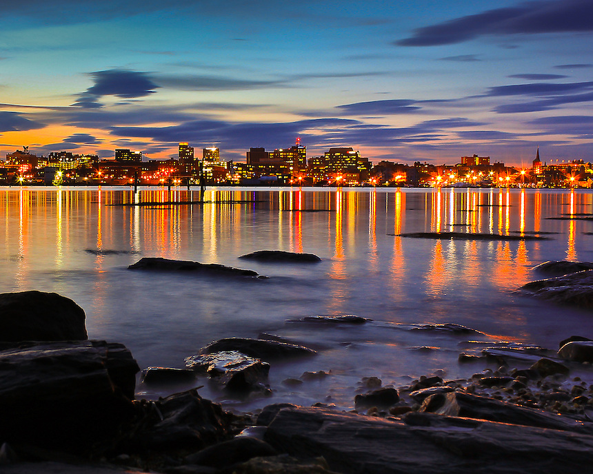
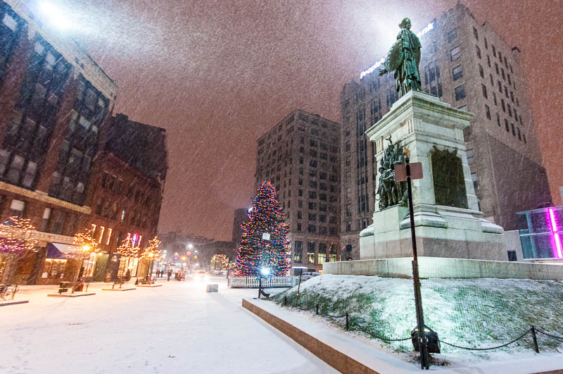

Portland has become Maine's economic capital because the city has Maine's largest port, largest population, and is close to Boston (115 miles to the south). Over the years, the local economy has shifted from fishing, manufacturing and agriculture towards a more service-based economy. Most national financial services organizations such as Bank of America, and Key Bank base their Maine operations in Portland. Unum, Magellan Petroleum, Maine Bank & Trust, ImmuCell Corp, and Pioneer Telephone have headquarters here.(via Wikipedia)
 The Arts District, centered on Congress Street, is home to the Portland Museum of Art, Portland Stage Company, Maine Historical Society & Museum, Portland Public Library, Maine College of Art, Children's Museum of Maine, SPACE Gallery, Merrill Auditorium, the Kotzschmar Memorial Organ, and Portland Symphony Orchestra, as well as many smaller art galleries and studios.(via Wikipedia)